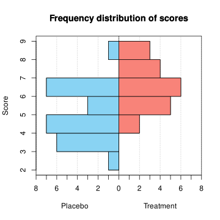

Physiotherapy exam 2021-06-07 Degrees: Physiotherapy Date: June 7, 2021 Descriptive Statistics and Regression Question 1 To study the effectiveness of a new treatment for the polymyalgia rheumatica a sample of patients with polymyalgia was drawn and they were divided into two groups. The first group received the new treatment while the second one received a placebo. After a year following the treatment they filled out a survey. The chart below shows the distribution of the survey score of the two groups of patients (the greater the score the better the treatment).  Construct the frequency table of the scores for the placebo group and plot the ogive. Compute the interquartile range of the scores for the placebo group. Are there outliers in the placebo group? In which group the score mean represents better? Which distribution is more normal regarding the kurtosis? Which score is relatively better, a score of 5 in the placebo group or a score of 6 in the treatment group? Use the following sums for the computations: Placebo: $\sum x_i=125.5$, $\sum x_i^2=680.25$, $\sum (x_i-\bar x)^3=27.11$ and $\sum (x_i-\bar x)^4=253.27$. Treatment: $\sum x_i=131$, $\sum x_i^2=887$ $\sum (x_i-\bar x)^3=2.66$ and $\sum (x_i-\bar x)^4=88.03$. Show solution $$\begin{array}{lrrrr} \mbox{Score} & n_i & f_i & N_i & F_i \newline \hline [2,3] & 1 & 0.04 & 1 & 0.0 \newline (3,4] & 6 & 0.24 & 7 & 0.3 \newline (4,5] & 7 & 0.28 & 14 & 0.6 \newline (5,6] & 3 & 0.12 & 17 & 0.7 \newline (6,7] & 7 & 0.28 & 24 & 1.0 \newline (7,8] & 0 & 0.00 & 24 & 1.0 \newline (8,9] & 1 & 0.04 & 25 & 1.0 \newline \hline \end{array} $$ $Q_1= 3.875$, $Q_3= 6.25$ and $IQR=2.375$. $f_1 = 0.3125$ and $f_2=9.8125$. Thus, there are no outliers in the placebo sample because all the values fall between the fences. Placebo: $\bar x=5.02$, $s^2=2.0096$, $s=1.4176$ and $cv=0.2824$. Treatment: $\bar x=6.55$, $s^2=1.4475$, $s=1.2031$ and $cv=0.1837$. Placebo: $g_2=-0.4914$. Treatment: $g_2=-0.8992$. Thus, the distribution of the placebo group is more normal as the coef. of kurtosis is closer to 0. Standard score for the placebo: $z(5)=-0.0141$. Standard score for the treatment: $z(6)=-0.4571$. As the standard score of $5$ in the placebo group is greater than the standard score of $6$ in the treatment group, a score of 5 in the placebo group is better. Question 2 We have applied different doses of an antibiotic to a culture of bacteria. The table below shows the number of residual bacteria corresponding to the different doses. $$ \begin{array}{lrrrrrrrr} \hline \mbox{Dose ($\mu$g)} & 0.2 & 0.7 & 1 & 1.5 & 2 & 2.4 & 2.8 & 3 \newline \mbox{Bacteria} & 40 & 32 & 28 & 20 & 18 & 15 & 12 & 11 \newline \hline \end{array} $$ Which regression model explains better the number of residual bacteria as a function of the antibiotic dose, the linear or the exponential? Use the best of the two previous regression models to predict the number of residual bacteria for an antibiotic dose of 3.5 $\mu$g. Is this prediction reliable? According to the linear regression model, what is the expected decrease in the number of residual bacteria per each $\mu$g more of antibiotic? Use the following sums for the computations ($X$=Antibiotic dose and $Y$=Number of bacteria): $\sum x_i=13.6$ $\mu$g, $\sum \log(x_i)=2.1362$ $\log(\mbox{$\mu$g})$, $\sum y_j=176$ bacteria, $\sum \log(y_j)=23.9638$ $\log(\mbox{bacteria})$, $\sum x_i^2=30.38$ $\mu$g$^2$, $\sum \log(x_i)^2=6.3959$ $\log(\mbox{$\mu$g})^2$, $\sum y_j^2=4622$ bacteria$^2$, $\sum \log(y_j)^2=73.3096$ $\log(\mbox{bacteria})^2$, $\sum x_iy_j=227$ $\mu$g$\cdot$bacteria, $\sum x_i\log(y_j)=37.4211$ $\mu$g$\cdot\log(\mbox{bacteria})$, $\sum \log(x_i)y_j=-17.633$ $\log(\mbox{$\mu$g})$bacteria, $\sum \log(x_i)\log(y_j)=3.6086$ $\log(\mbox{$\mu$g})\log(\mbox{bacteria})$. Show solution $\overline{x}=1.7$ $\mu$g, $s_x^2=0.9075$ $\mu$g$^2$. $\bar y=22$ bacteria, $s_y^2=93.75$ bacteria$^2$. $s_{xy}=-9.025$ $\mu$g$\cdot$bacteria. Linear coefficient of determination $r^2 = 0.9574$. $\overline{\log(y)}=2.9955$ log(bacteria), $s_{\log(y)}^2=0.1908$ log(bacteria)$^2$. $s_{x\log(y)}=-0.4147$ $\mu$g$\cdot$ log(bacteria). Exponential coefficient of determination $r^2 = 0.9928$. Thus, the exponential model explains better the number of residual bacteria as a function of the antibiotic dose because the exponential coef. of determination is greater. Exponential regression model: $y=e^{3.7723-0.4569x}$. Prediction: $y(3.5)=8.7845$ bacteria. Although the coef. of determination is close to 1, the this prediction is not reliable because the sample size is very small. $b_{yx}=-9.9449$, therefore the number of bacteria decreases $9.9449$ per each $\mu$g more of antibiotic. Probability and Random Variables Question 3 In women, the shoulder circumference follows a normal distribution with mean 98 cm and standard deviation 5 cm. Compute the percentage of women in the population with a shoulder circumference between 95 and 105 cm. Above what value are the 5% of women with a highest shoulder circumference? Compute the probability that in a sample of 50 women there is at least 2 with a shoulder circumference less than 90 cm. Show solution Let $X$ be the shoulder circumference, then $X\sim N(98, 5)$. $P(95\leq X\leq 105) = 0.645$, that is $6.45%$. $P_{95} = 106.22$ cm. Let $Y$ be the number of women with a shoulder circumference less than 90 cm in a sample of 50 women. Then, $Y\sim B(50, 0.0548) \approx P(2.74)$, and $P(Y\geq 2) = 0.7585$. Question 4 It has been observed that a company of components for physiotherapy machines produces 12 defective components every 300 hours on average. What is the probability of producing more than 2 defective components in 100 hours? What is the probability of producing at most one defective component in 50 hours? If there are 7 companies in Spain that produce these components, and assuming that all of them produce the same number of defective components on average, compute the probability that at least one company produces more than 3 defective components in 50 hours. Show solution Let $X$ be the number of defective components in 100 hours, then $X\sim P(4)$, and $P(X>2) = 0.7619$. Let $Y$ be the number of defective components in 50 hours, then $X\sim P(2)$, and $P(X\leq 1) = 0.406$. Let $Z$ be the number of companies that produce more than 3 defective components in 50 hours in a sample of 7 companies, then $Z\sim B(7, 0.1429)$, and $P(Y\geq 1) = 0.6601$. Question 5 We want to study the risk for a new vaccine to cause thrombi compared with a traditional vaccine. After applying the new vaccine to 1000 persons and the traditional vaccine to 3000 persons, we observed 30 persons with thrombi in the new vaccine group and 42 persons with thrombi in the traditional vaccine group. Compute the relative risk of suffering thrombi with the new vaccine and interpret it. Compute the odds ratio of suffering thrombi with the new vaccine and interpret it. Which association measure is more reliable? In a random experiment we applied both vaccines (in different moments) to a sample and we observed that 4% of persons suffered some thrombi (due to the new vaccine or to the traditional vaccine). Compute the probability of suffering thrombi with the new vaccine and no with the traditional one. Are the events corresponding to suffering thrombi with the new vaccine and the traditional vaccine independent? Show solution Let $T$ be the event of suffering thrombi. $RR(T)=2.1429$. Thus, the risk of suffering thrombi with the new vaccine is more than the double that with traditional vaccine. $OR(T)=2.1782$. Thus, the odds of suffering thrombi with the new vaccine is more than the double that with traditional vaccine. Both measures are reliable because the study is prospective and we can estimate the incidence, but the relative risk is easier to interpret. Let $T_n$ and $T_t$ the events of suffering thrombi with the new and the traditional vaccines, respectively. $P(T_n\cap \overline{T_t}) = 0.026$. $P(T_t|T_n) = 0.1333 \neq P(T_t) = 0.014$, thus the events are dependent. Exam Statistics Biostatistics Physiotherapy Previous Physiotherapy exam 2022-03-11 Next Physiotherapy exam 2021-05-05